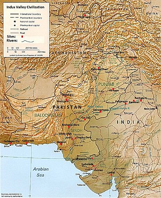
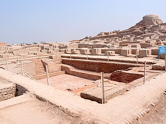

Mauryan Empire
The Maurya Empire was a geographically extensive Iron Age historical power in South Asia based in Magadha. Founded by
Chandragupta Maurya in 322 BCE, it existed until 185 BCE. The empire was centralized by the conquest of the Indo-Gangetic Plain;
its capital city was located at Pataliputra (present-day Patna). Outside this imperial centre, the empire's geographical extent
was dependent on the loyalty of military commanders who controlled the armed cities scattered within it. During Ashoka's rule
(ca. 268–232 BCE) the empire briefly controlled the major urban hubs and arteries of the Indian subcontinent except
the deep south. It declined for about 50 years after Ashoka's rule, and dissolved in 185 BCE with the assassination of
Brihadratha by Pushyamitra Shunga and foundation of the Shunga dynasty in Magadha.
The Mauryan Empire left a lasting impact on Indian history, contributing to the development of political structures,
administration, and culture, as well as promoting the spread of Buddhism.
Basically the mauryan empire was one of the largest empires in the history if india and is responsible for giving India the current shape it has.


Previous Page